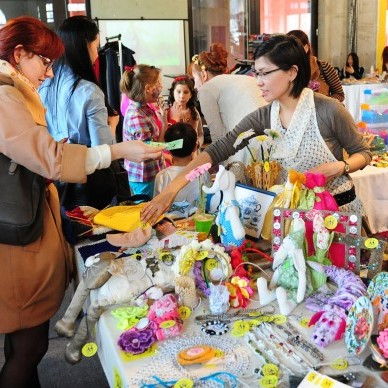
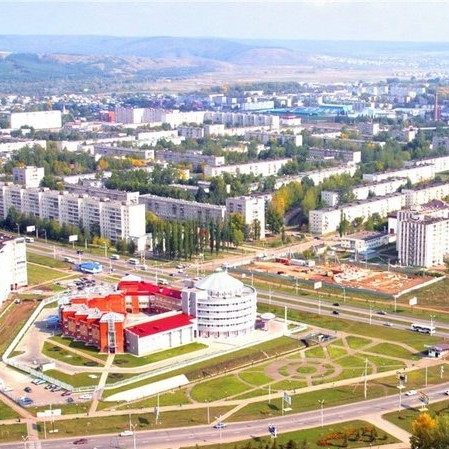
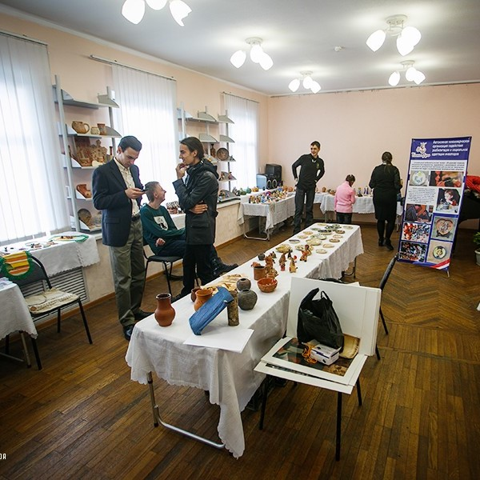
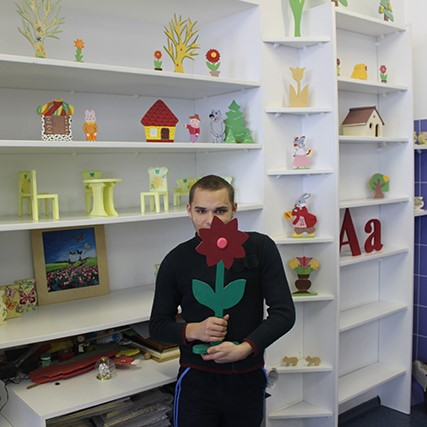
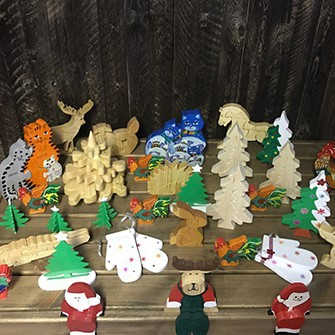

15 марта февраля, 2018, Админ
В начале февраля в Казахстане открылся первый интернет-магазин, где можно приобрести сувениры, картины, поделки и другие вещи, сделанные руками людей с особыми потребностями. Автор проекта Айжан Борсукбаева, рассказалаа, что Invamade.kz - благотворительная площадка для людей с ограниченными возможностями, которые хотят показать, что зарабатывать деньги при их положении тоже возможно! Она отметила, что в южной столице довольно много людей с инвалидностью, которые занимаются handmade, пишут картины, делают очень красивые изделия. Но не все, по ее наблюдениям, готовы показывать свое творчество широкой аудитории.

26 февраля, 2018, Админ
В Республике Татарстан разработана интерактивная карта доступности объектов социальной, транспортной и инженерной инфраструктуры для инвалидов и маломобильных групп населения. Открыв карту, люди с ограниченными физическими возможностями могут выяснить насколько то или иное учреждение приспособлено для передвижения. На сайте Министерства экономики Республики Татарстан в разделе "Доступная среда" можно найти информацию о предоставлении услуг инвалидам в сфере авиа и ж/д, о государственных стандартах и строительных нормах, касающихся маломобильных людей и, самое главное, продукцию, сделанную руками этих людей и правйс на неё!

5 января, 2018, Админ
Во вторник, 3 января, в честь Международного дня инвалидов в Приморском краевом центре народной культуры состоялось открытие выставки работ людей с ограниченными возможностями. Экспонаты для выставки предоставлены как участниками студии «Благое дело», так и неравнодушными к искусству жителями Владивостока. На выставке, организованной некоммерческой организацией «Благое дело», представлены работы, собранные за все время существования студии. Ко всему прочему, в экспозицию вошли также работы партнеров из Японии. Они продемонстрировали жителям Владивостока изделия из ткани и шерсти. Но все же больше поделок из керамики, так как именно это направление является доминирующим в студии «Благое дело». По мнению директора организации Геннадия Антропова, прикладное искусство, а в особенности создание изделий из керамики, способствует развитию моторики у людей с ограниченными возможностями.

8 декабря, 2017, Админ
Корреспондент агентства «Минск-Новости» вместе с волонтерами из столичных колледжей посетила социальные мастерские, которые работают при храме иконы Божией Матери «Всех скорбящих Радость». "— Когда долго поработаете с особенными людьми, в какой-то момент ощутите: они вам становятся нужнее, чем мы им", — отмечает руководитель социальных мастерских для людей с особенностями в развитии Марина Кравцова.

20 ноября, 2017, АДмин
Экологичные пазлы и декоративные свечи смогут приобрести на ярмарке «ART-ель» псковичи. Создание в 1999 году в Пскове уникального для России инновационного проекта «Производственно-интеграционные мастерские для инвалидов» стало попыткой решения вопроса занятости инвалидов старше 18 лет с множественными нарушениями. Ребята в мастерских занимаются производством мебели для сада и огорода, скворечников и кормушек для птиц, деревянных игрушек - пазлов, аксессуаров для бань, предметов интерьера и обихода. Делают сумки из текстиля, прихватки, подарочные пакеты из крафт-бумаги, блокноты, открытки, декоративные свечи и многое другое.